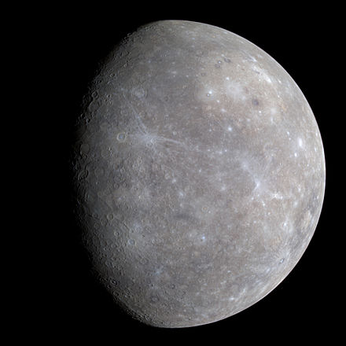
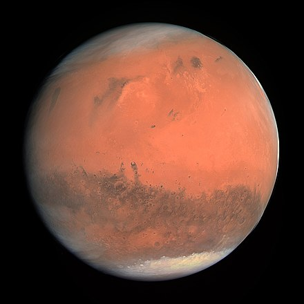
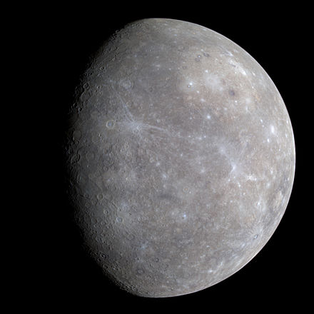
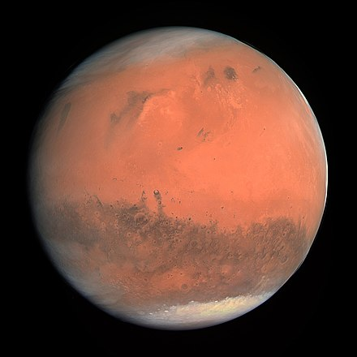

word for "soil"



| Name | Origin of Name | Planet Type | Distance from the Sun | Orbital Period | Number of Moons |
|---|---|---|---|---|---|
| Mercury  |
Roman god of messeges | Terrestrial Planet | 35.98 million miles | 88 days | 0 |
| Venus |
Roman goddess of love | Terrestrial Planet | 67.24 million miles | 225 days | 0 |
| Earth |
Evolved from Middle English word for "soil" |
Terrestrial Planet | 92.96 million miles | 365 days | 1 |
| Mars  |
Roman god of war | Terrestrial Planet | 141.6 million miles | 687 days | 2 |
| Jupiter |
Roman king of the gods | Gas Giant | 483.8 million miles | 12 years | 79 |
| Saturn |
Roman god of agriculture | Gas Giant | 890.8 million miles | 29 years | 82 |
| Uranus |
Greek god of the sky | Ice Giant | 1.784 billion miles | 84 years | 27 |
| Neptune |
Roman god of the seas | Ice Giant | 2.793 billion miles | 165 years | 14 |